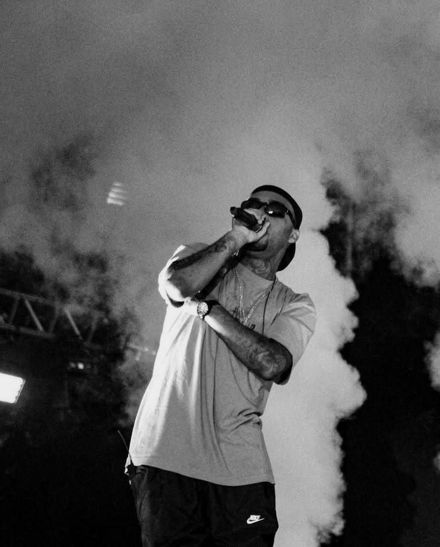

Flávio Cesar Costa de Castro, mais conhecido pelo seu vulgo artístico Orochi, é um rapper, cantor e compositor brasileiro nascido em 24 de março de 1999, em São Gonçalo, Rio de Janeiro. Desde jovem, Orochi demonstrou um talento excepcional para a música, tornando-se uma figura de destaque no cenário do rap e trap brasileiro. Cria da lendária “Batalha do Tanque” em São Gonçalo, ele virou uma figura marcante na cena com diversos títulos e refrões conhecidos pela sua “Gastação” com os adversários, o que gerou o título de “Rei da gastação” na época. Em meados de 2015, Flávio, nome de batismo do artista, começou a ganhar mais notoriedade no cenário do Rap Nacional com o grupo “Modéstiaparte” juntos dos integrantes Bruno Maquiny e Azevedo.
Em Março de 2019, Orochi estava a caminho de um show quando foi parado pela Polícia Rodoviária e acabou detido por porte de drogas e desacato a autoridades. Logo após a prisão, Orochi soltou o Single “Balão” que rapidamente estourou, sendo seu primeiro grande hit, com mais de 190 Milhões de visualizações no YouTube e com letras que expressavam a sua insatisfação com a repercussão das informações falsas com seu nome, espalhadas pela impressa.
Orochi foi indicado ao prêmio MTV Millennial Awards 2022 na categoria Feat. Nacional pela música "Trip".
É um dos rappers mais influentes da nova geração do rap brasileiro, combinando talento musical com uma presença marcante nas redes sociais. Apesar das controvérsias, ele continua a ser uma figura central no cenário do trap e hip-hop, sempre inovando e conquistando novos fãs.
Em 2020, abriu a sua própria gravadora, a MainStreet Records que hoje é responsável pela carreira de mais de trinta artistas do Rap e Trap Nacional. Após lançar dois álbum pela sua própria gravadora, Orochi anunciou em suas redes sociais que não lançaria mais nenhum álbum e que agora, cuidaria apenas da gestão dos artistas da sua empresa.
Promessa que não se concretizou, já que em 2024, lançou ainda mais dois álbuns “442” e “Para todas as do Job“ e ainda em 2023, anunciou a criação do seu segundo selo “A Matilha” em parceria com a MainStreet que busca dar suporte e investimento para novos artistas da cena.